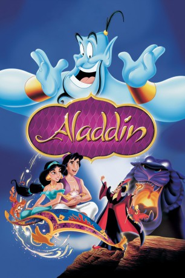

#3470 Aladdin
Auszeichnungen: 2 Oscars gewonnen für 3 Oscars nominiert 3 GoldenGlobes gewonnen
 
 IMDB-Wertung: 8.0 / 10
IMDB-Wertung: 8.0 / 10  Metascore: 0
Metascore: 0 
Aladdin ist ein gewitzter Straßenjunge, der sich auf den ersten Blick unsterblich in die schöne Prinzessin Yasmin verliebt. Als er in den Besitz der Wunderlampe kommt, auf die es auch der böse Großwesir Jaffar abgesehen hat, verändert sich sein Leben. Der von Aladdin befreite Flaschengeist Dschinni gewährt dem Lausbub nämlich drei Wünsche. Als reicher Prinz gewandet macht er so Yasmin den Hof. Das wiederum beäugt der böse Jaffar mit wachsendem Unmut.
Jahr: 1992
Dauer: 90 Minuten
FSK: 0
Land: USA Studio: Buena Vista Distribution Co., Inc.Tonspuren: DTS - ,
Untertitel:
Auflösung: 1080p (1912x1040) Größe: 4935 MB
Genre: Komödie, Abenteuer, Fantasy, Animation/Trick, Familie, Liebe, Musical
Regisseur: Ron Clements, John Musker
Drehbuch: Borja Cobeaga
Soundtrack:
Darsteller:
Datei: X:\Kinder Disney HD\Aladdin\Aladdin (1992, FSK0, 1912x1040).mkv seit 12.04.2016
Festplatte: Kinder-Filme+Trick
 Es gibt insgesamt 8 Filme in der Gruppe 'Kinder Disney HD\Aladdin'
Es gibt insgesamt 8 Filme in der Gruppe 'Kinder Disney HD\Aladdin'